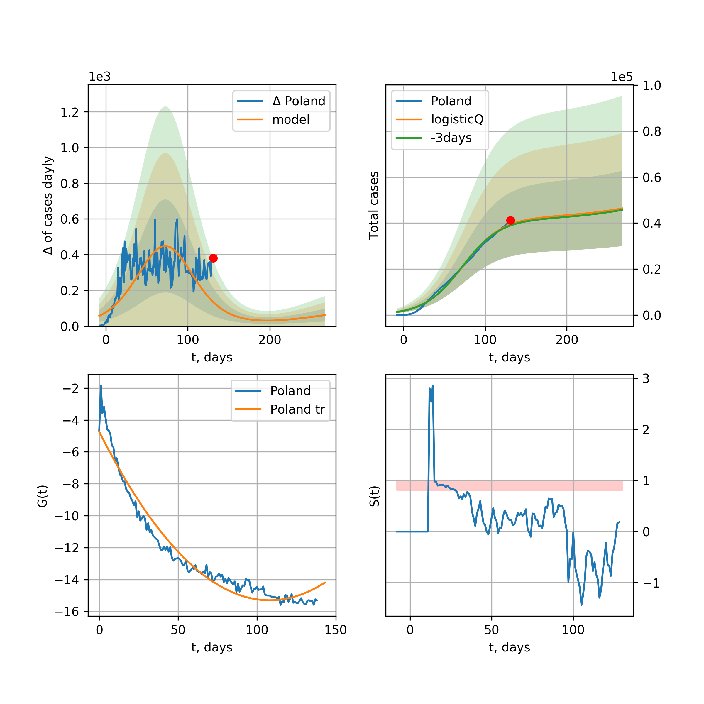
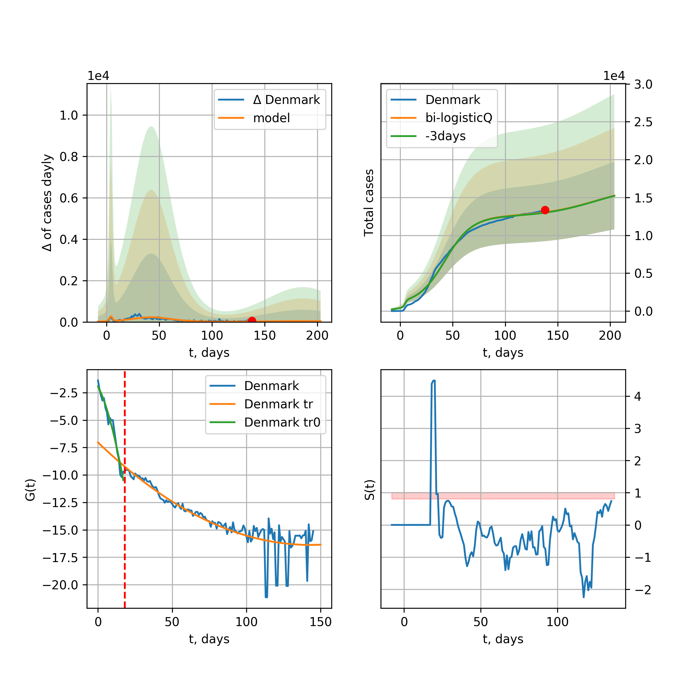
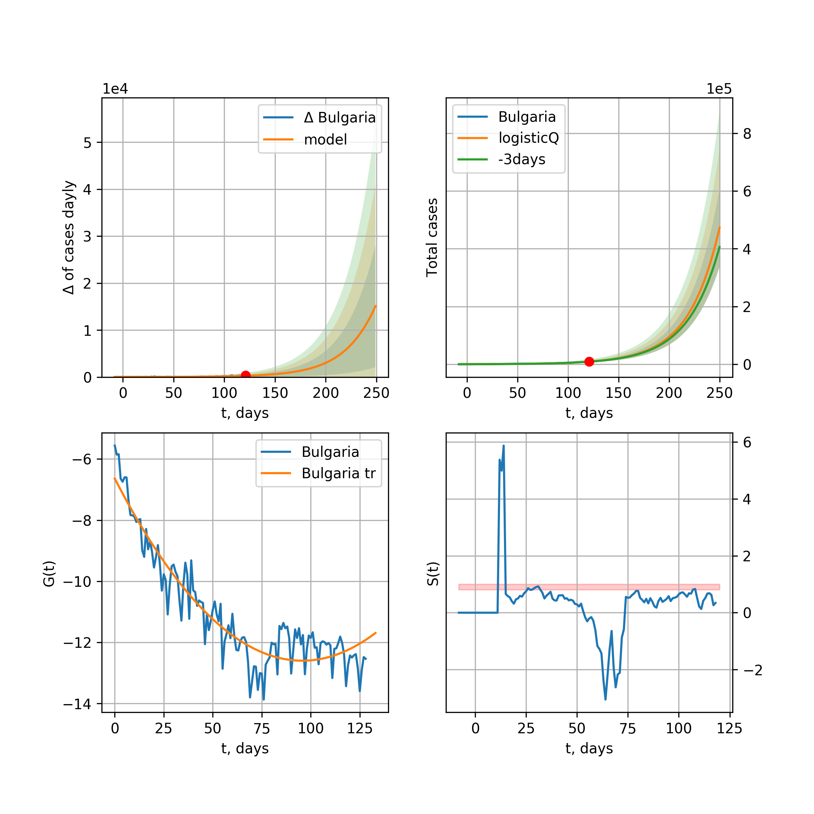

Multi-logistic model of COVID-19 dynamics
Model, code, results
Project maintained by algmaknick Hosted on GitHub Pages — Theme by mattgraham
World

World data at: 2020-05-05
+3 day model MAPE: 0.044982
model: bi-logisticQ
coeffs: [ 3.46017754e+06 1.92678624e-06 7.27167811e+01 -6.11127277e+04]
S.Korea scenario coeffs: [0.35416971, 0.02606324, 4.35859408, 19.30413219]
rational stdev: 0.137365
forecast at the end of period: +312 days
deltaDaycases: 424
total cases: 5087082 ± 698784
total death: 352540 ± 145279
tri-logisticQ approximation splitting points: 26,59
trend coefficient of determination: 0.957216
intercept_: -9.890425229004336
coeffs_: [ 0. -0.26614025 0.00124975]
trend1 coefficient of determination: 0.874764
intercept_: -22.035447570025077
coeffs_: [ 0. 0.31660897 -0.00341999]
trend coefficient of determination: 0.989986
intercept_: -1.3387764729766225
coeffs_: [ 0. -0.33064627 0.00154962]
European Union

European Union data at: 2020-05-05
+3 day model MAPE: 0.014295
model: logisticQ
coeffs: [ 1.03771034e+06 1.11115334e-06 4.85133590e+01 -1.12604034e+05]
S.Korea scenario coeffs: [0.35416971, 0.02606324, 4.35859408, 19.30413219]
rational stdev: 0.427899
forecast at the end of period: +207 days
deltaDaycases: 214
total cases: 1401902 ± 599872
total death: 146687 ± 188301
trend coefficient of determination: 0.987108
intercept_: -3.0249849057464147
coeffs_: [ 0. -0.32721308 0.00167164]
USA

USA data at: 2020-05-05
+3 day model MAPE: 0.041904
model: logisticQ
coeffs: [ 1.30530718e+06 1.25382178e-06 3.73111812e+01 -9.16171064e+04]
S.Korea scenario coeffs: [0.35416971, 0.02606324, 4.35859408, 19.30413219]
rational stdev: 0.425116
forecast at the end of period: +158 days
deltaDaycases: 1208
total cases: 1746248 ± 742357
total death: 101971 ± 130048
trend coefficient of determination: 0.996616
intercept_: -5.587813617279846
coeffs_: [ 0. -0.3739585 0.00288815]
Spain

Spain data at: 2020-05-05
+3 day model MAPE: 0.011027
model: bi-logisticQ
coeffs: [ 7.18880937e+04 3.57546986e-06 5.01265590e+01 -6.91365043e+04]
rational stdev: 0.337804
forecast at the end of period: +60 days
deltaDaycases: 0
total cases: 252377 ± 85254
total death: 25798 ± 26143
bi-logisticQ approximation splitting point: 50
trend coefficient of determination: 0.997202
intercept_: -3.834231460165485
coeffs_: [ 0. -0.42809872 0.00374483]
trend coefficient of determination: 0.640409
intercept_: -19.399393654921216
coeffs_: [ 0. 0.17492744 -0.0021126 ]
Italy

Italy data at: 2020-05-05
+3 day model MAPE: 0.015329
model: logisticQ
coeffs: [ 2.09786122e+05 7.34234368e-07 2.98431256e+01 -1.47141993e+05]
S.Korea scenario coeffs: [0.35416971, 0.02606324, 4.35859408, 19.30413219]
rational stdev: 0.324623
forecast at the end of period: +116 days
deltaDaycases: 241
total cases: 279467 ± 90721
total death: 38460 ± 37455
trend coefficient of determination: 0.992805
intercept_: -7.191608797660742
coeffs_: [ 0. -0.2767549 0.00197873]
United Kingdom

United Kingdom data at: 2020-05-05
+3 day model MAPE: 0.041794
model: logisticQ
coeffs: [ 2.06538838e+05 1.50338322e-06 4.20962098e+01 -7.82515472e+04]
S.Korea scenario coeffs: [0.35416971, 0.02606324, 4.35859408, 19.30413219]
rational stdev: 0.395570
forecast at the end of period: +172 days
deltaDaycases: 213
total cases: 275985 ± 109171
total death: 41650 ± 49426
trend coefficient of determination: 0.995438
intercept_: -4.191973134440168
coeffs_: [ 0. -0.30838628 0.00199325]
France

France data at: 2020-05-05
+3 day model MAPE: 0.004556
model: logisticQ
coeffs: [ 1.69970017e+05 2.52488103e-06 3.24072117e+01 -5.92318776e+04]
S.Korea scenario coeffs: [0.35416971, 0.02606324, 4.35859408, 19.30413219]
rational stdev: 0.310951
forecast at the end of period: +126 days
deltaDaycases: 131
total cases: 228434 ± 71031
total death: 34196 ± 31899
trend coefficient of determination: 0.982452
intercept_: -5.0636351891747164
coeffs_: [ 0. -0.30585527 0.0018169 ]
Germany

Germany data at: 2020-05-05
+3 day model MAPE: 0.011633
model: logisticQ
coeffs: [ 1.62296238e+05 1.16949783e-06 3.01203706e+01 -1.23671732e+05]
S.Korea scenario coeffs: [0.35416971, 0.02606324, 4.35859408, 19.30413219]
rational stdev: 0.372480
forecast at the end of period: +130 days
deltaDaycases: 47
total cases: 219139 ± 81625
total death: 9175 ± 10252
trend coefficient of determination: 0.993126
intercept_: -4.6571872852012355
coeffs_: [ 0. -0.33818551 0.00228178]
Turkey

Turkey data at: 2020-05-05
+3 day model MAPE: 0.018578
model: logisticQ
coeffs: [ 1.31715378e+05 2.23769782e-06 2.73409664e+01 -6.67201553e+04]
S.Korea scenario coeffs: [0.35416971, 0.02606324, 4.35859408, 19.30413219]
rational stdev: 0.392578
forecast at the end of period: +126 days
deltaDaycases: 57
total cases: 177618 ± 69729
total death: 4828 ± 5686
trend coefficient of determination: 0.976323
intercept_: -3.087148032030205
coeffs_: [ 0. -0.47923877 0.00458809]
Russia

Russia data at: 2020-05-05
+3 day model MAPE: 0.126128
model: logisticQ
coeffs: [ 2.38551548e+05 6.05960897e-06 5.40433992e+01 -2.21087119e+04]
S.Korea scenario coeffs: [0.35416971, 0.02606324, 4.35859408, 19.30413219]
rational stdev: 0.384187
forecast at the end of period: +228 days
deltaDaycases: 183
total cases: 320317 ± 123061
total death: 2991 ± 3447
trend coefficient of determination: 0.952885
intercept_: -3.686154533049173
coeffs_: [ 0. -0.20157222 0.00038557]
Iran

Iran data at: 2020-05-05
+3 day model MAPE: 0.018972
model: bi-logisticQ
coeffs: [ 8.91897875e+04 9.42545818e-07 3.66426863e+01 -1.30718173e+05]
S.Korea scenario coeffs: [0.35, 0.5, 3, 1]
rational stdev: 0.318169
forecast at the end of period: +102 days
deltaDaycases: 46
total cases: 127025 ± 40415
total death: 8055 ± 7688
bi-logisticQ approximation splitting point: 17
trend coefficient of determination: 0.987745
intercept_: -2.720144864989817
coeffs_: [ 0. -0.61067547 0.00823538]
trend coefficient of determination: 0.982985
intercept_: -8.497450197710199
coeffs_: [ 0. -0.15921015 0.00074124]
Brazil

Brazil data at: 2020-05-05
+3 day model MAPE: 0.007622
model: logisticQ
coeffs: [ 2.68708194e+05 8.11307726e-06 5.90502735e+01 -1.16853153e+04]
S.Korea scenario coeffs: [0.35416971, 0.02606324, 4.35859408, 19.30413219]
rational stdev: 0.409799
forecast at the end of period: +277 days
deltaDaycases: 119
total cases: 361375 ± 148091
total death: 24801 ± 30490
trend coefficient of determination: 0.845636
intercept_: -3.9111814043897795
coeffs_: [ 0. -0.31274593 0.00237899]
Canada

Canada data at: 2020-05-05
+3 day model MAPE: 0.049689
model: logisticQ
coeffs: [ 7.05515599e+04 1.44443891e-06 4.07200895e+01 -7.25481072e+04]
S.Korea scenario coeffs: [0.35416971, 0.02606324, 4.35859408, 19.30413219]
rational stdev: 0.403870
forecast at the end of period: +196 days
deltaDaycases: 24
total cases: 95081 ± 38400
total death: 6195 ± 7505
trend coefficient of determination: 0.985830
intercept_: -4.62918807136523
coeffs_: [ 0. -0.26946123 0.00173803]
Belgium

Belgium data at: 2020-05-05
+3 day model MAPE: 0.008493
model: logisticQ
coeffs: [ 5.19756218e+04 1.63626772e-06 3.18380629e+01 -7.65795744e+04]
S.Korea scenario coeffs: [0.35416971, 0.02606324, 4.35859408, 19.30413219]
rational stdev: 0.345837
forecast at the end of period: +130 days
deltaDaycases: 51
total cases: 69544 ± 24051
total death: 11036 ± 11449
trend coefficient of determination: 0.978202
intercept_: -4.2388382948898045
coeffs_: [ 0. -0.3265481 0.00240722]
Peru

Peru data at: 2020-05-05
+3 day model MAPE: 0.036178
model: logisticQ
coeffs: [ 9.39845163e+04 6.16898917e-06 4.96792090e+01 -1.85682333e+04]
S.Korea scenario coeffs: [0.35416971, 0.02606324, 4.35859408, 19.30413219]
rational stdev: 0.353629
forecast at the end of period: +228 days
deltaDaycases: 50
total cases: 126388 ± 44694
total death: 3565 ± 3782
trend coefficient of determination: 0.965928
intercept_: -3.5541720016795644
coeffs_: [ 0. -0.30005837 0.00223132]
Netherlands

Netherlands data at: 2020-05-05
+3 day model MAPE: 0.008118
model: logisticQ
coeffs: [ 4.21263742e+04 1.48866882e-06 3.32214658e+01 -7.98702183e+04]
S.Korea scenario coeffs: [0.35416971, 0.02606324, 4.35859408, 19.30413219]
rational stdev: 0.362311
forecast at the end of period: +130 days
deltaDaycases: 53
total cases: 56110 ± 20329
total death: 7057 ± 7670
trend coefficient of determination: 0.980214
intercept_: -3.248568028136626
coeffs_: [ 0. -0.35876158 0.00275153]
India

India data at: 2020-05-05
+3 day model MAPE: 0.118782
model: logisticQ
coeffs: [ 7.91913430e+04 2.79965388e-04 2.34358834e+01 -3.69818231e+02]
S.Korea scenario coeffs: [0.35416971, 0.02606324, 4.35859408, 19.30413219]
rational stdev: 0.145006
forecast at the end of period: +158 days
deltaDaycases: 18
total cases: 106907 ± 15502
total death: 3665 ± 1594
trend coefficient of determination: 0.975881
intercept_: -9.271747175667429
coeffs_: [ 0. -0.23640887 0.00335483]
Switzerland

Switzerland data at: 2020-05-05
+3 day model MAPE: 0.007436
model: logisticQ
coeffs: [ 2.92134600e+04 1.09055166e-06 2.53632164e+01 -1.40774304e+05]
S.Korea scenario coeffs: [0.35416971, 0.02606324, 4.35859408, 19.30413219]
rational stdev: 0.359227
forecast at the end of period: +102 days
deltaDaycases: 12
total cases: 39396 ± 14152
total death: 2356 ± 2539
trend coefficient of determination: 0.985459
intercept_: -3.479538415091488
coeffs_: [ 0. -0.35202697 0.00249122]
Ecuador

Ecuador data at: 2020-05-04
+3 day model MAPE: 0.085850
model: logisticQ
coeffs: [ 3.07235442e+04 1.55214511e-06 2.75534123e+01 -7.48634821e+04]
S.Korea scenario coeffs: [0.35416971, 0.02606324, 4.35859408, 19.30413219]
rational stdev: 0.341728
forecast at the end of period: +131 days
deltaDaycases: 20
total cases: 41248 ± 14095
total death: 2030 ± 2081
trend coefficient of determination: 0.624533
intercept_: -6.297136920890916
coeffs_: [ 0. -0.27370308 0.00211128]
Portugal

Portugal data at: 2020-05-05
+3 day model MAPE: 0.015839
model: logisticQ
coeffs: [ 2.55625503e+04 1.16174500e-06 2.89201926e+01 -1.14521546e+05]
S.Korea scenario coeffs: [0.35416971, 0.02606324, 4.35859408, 19.30413219]
rational stdev: 0.390476
forecast at the end of period: +130 days
deltaDaycases: 10
total cases: 34455 ± 13453
total death: 1439 ± 1685
trend coefficient of determination: 0.987116
intercept_: -2.7516383968708267
coeffs_: [ 0. -0.3771196 0.00298371]
Saudi Arabia

Saudi Arabia data at: 2020-05-05
+3 day model MAPE: 0.044792
model: logisticQ
coeffs: [ 4.27965864e+04 4.77413505e-04 4.88924865e+01 -2.30486089e+02]
S.Korea scenario coeffs: [0.35416971, 0.02606324, 4.35859408, 19.30413219]
rational stdev: 0.375761
forecast at the end of period: +214 days
deltaDaycases: 32
total cases: 57405 ± 21570
total death: 379 ± 427
trend coefficient of determination: 0.799794
intercept_: -4.216989925075281
coeffs_: [ 0. -0.24552397 0.00172683]
Sweden

Sweden data at: 2020-05-05
+3 day model MAPE: 0.014018
model: logisticQ
coeffs: [ 2.73340286e+04 1.80047306e-06 4.35065250e+01 -5.17631251e+04]
S.Korea scenario coeffs: [0.35416971, 0.02606324, 4.35859408, 19.30413219]
rational stdev: 0.334810
forecast at the end of period: +186 days
deltaDaycases: 27
total cases: 36400 ± 12187
total death: 4474 ± 4493
trend coefficient of determination: 0.966027
intercept_: -3.9490072724247067
coeffs_: [ 0. -0.29207891 0.00224256]
Ireland

Ireland data at: 2020-05-05
+3 day model MAPE: 0.008841
model: logisticQ
coeffs: [ 2.31429213e+04 3.22806581e-05 3.43995023e+01 -4.16201970e+03]
S.Korea scenario coeffs: [0.35416971, 0.02606324, 4.35859408, 19.30413219]
rational stdev: 0.341654
forecast at the end of period: +144 days
deltaDaycases: 19
total cases: 31054 ± 10609
total death: 1891 ± 1938
trend coefficient of determination: 0.980139
intercept_: -3.582015525573837
coeffs_: [ 0. -0.29932658 0.00206925]
Mexico

Mexico data at: 2020-05-05
+3 day model MAPE: 0.018581
model: logisticQ
coeffs: [ 5.10052498e+04 1.55215911e-05 3.95975519e+01 -6.77879975e+03]
S.Korea scenario coeffs: [0.35416971, 0.02606324, 4.35859408, 19.30413219]
rational stdev: 0.218804
forecast at the end of period: +214 days
deltaDaycases: 12
total cases: 68832 ± 15060
total death: 6630 ± 4352
trend coefficient of determination: 0.987975
intercept_: -6.572806392384744
coeffs_: [ 0. -0.22052172 0.00182403]
Singapore

Singapore data at: 2020-05-05
+3 day model MAPE: 0.030617
model: bi-logisticQ
coeffs: [ 2.01380999e+04 1.48078424e-03 8.25077859e+01 -4.83500420e+01]
S.Korea scenario coeffs: [0.35, 0.5, 4.0, 1.0]
rational stdev: 0.404360
forecast at the end of period: +102 days
deltaDaycases: 0
total cases: 20236 ± 8183
total death: 18 ± 21
bi-logisticQ approximation splitting point: 35
trend coefficient of determination: 0.914568
intercept_: -2.036640634366525
coeffs_: [ 0. -0.39517788 0.00592335]
trend coefficient of determination: 0.895763
intercept_: -10.18602256326079
coeffs_: [ 0. 0.10129739 -0.00131357]
Chile

Chile data at: 2020-05-05
+3 day model MAPE: 0.159068
model: logisticQ
coeffs: [ 3.40098492e+04 1.51173087e-06 5.01184228e+01 -5.34279122e+04]
S.Korea scenario coeffs: [0.35416971, 0.02606324, 4.35859408, 19.30413219]
rational stdev: 0.426699
forecast at the end of period: +228 days
deltaDaycases: 31
total cases: 45240 ± 19304
total death: 565 ± 723
trend coefficient of determination: 0.753943
intercept_: -4.224801459947761
coeffs_: [ 0. -0.28418989 0.00235554]
Israel

Israel data at: 2020-05-05
+3 day model MAPE: 0.010880
model: logisticQ
coeffs: [ 1.61197365e+04 1.11180867e-06 3.54636098e+01 -1.28524127e+05]
S.Korea scenario coeffs: [0.35416971, 0.02606324, 4.35859408, 19.30413219]
rational stdev: 0.408279
forecast at the end of period: +158 days
deltaDaycases: 3
total cases: 21787 ± 8895
total death: 318 ± 389
trend coefficient of determination: 0.935533
intercept_: -3.0475046049993324
coeffs_: [ 0. -0.22991117 0.00077623]
Austria

Austria data at: 2020-05-05
+3 day model MAPE: 0.006908
model: logisticQ
coeffs: [ 1.50671764e+04 1.38164800e-06 2.32021209e+01 -1.47020821e+05]
S.Korea scenario coeffs: [0.35416971, 0.02606324, 4.35859408, 19.30413219]
rational stdev: 0.319076
forecast at the end of period: +88 days
deltaDaycases: 4
total cases: 20363 ± 6497
total death: 788 ± 754
trend coefficient of determination: 0.980396
intercept_: -2.7976720088539597
coeffs_: [ 0. -0.35238171 0.0023746 ]
Belarus

Belarus data at: 2020-05-05
+3 day model MAPE: 0.027175
model: logisticQ
coeffs: [ 2.57560946e+04 6.78856562e-06 2.06113999e+01 -2.01712834e+04]
S.Korea scenario coeffs: [0.35416971, 0.02606324, 4.35859408, 19.30413219]
rational stdev: 0.233506
forecast at the end of period: +102 days
deltaDaycases: 38
total cases: 34303 ± 8010
total death: 200 ± 140
trend coefficient of determination: 0.976649
intercept_: -7.007865173266945
coeffs_: [ 0. -0.27640168 0.00316475]
Japan

Japan data at: 2020-05-05
+3 day model MAPE: 0.022423
model: logisticQ
coeffs: [ 1.52176113e+04 1.15837760e-03 2.02548211e+01 -1.05375524e+02]
S.Korea scenario coeffs: [0.35416971, 0.02606324, 4.35859408, 19.30413219]
rational stdev: 0.095258
forecast at the end of period: +102 days
deltaDaycases: 9
total cases: 20472 ± 1950
total death: 746 ± 213
trend coefficient of determination: 0.918489
intercept_: -9.886611161935987
coeffs_: [ 0. -0.01437823 -0.00168034]
Qatar

Qatar data at: 2020-05-05
+3 day model MAPE: 0.005799
model: bi-logisticQ
coeffs: [ 1.36260876e+04 3.64092072e-04 4.56522924e+01 -4.20147499e+02]
S.Korea scenario coeffs: [0.35416971, 0.02606324, 4.35859408, 19.30413219]
rational stdev: 0.359172
forecast at the end of period: +228 days
deltaDaycases: 0
total cases: 30160 ± 10832
total death: 21 ± 22
bi-logisticQ approximation splitting point: 31
trend coefficient of determination: 0.919409
intercept_: -1.6852707465713292
coeffs_: [ 0. -0.86529683 0.02183056]
trend coefficient of determination: 0.949976
intercept_: -8.83404246077564
coeffs_: [ 0. -0.00692693 -0.00101751]
Poland

Poland data at: 2020-05-05
+3 day model MAPE: 0.032291
model: logisticQ
coeffs: [ 1.51815233e+04 1.64432013e-06 3.38449250e+01 -6.89101851e+04]
S.Korea scenario coeffs: [0.35416971, 0.02606324, 4.35859408, 19.30413219]
rational stdev: 0.362376
forecast at the end of period: +144 days
deltaDaycases: 15
total cases: 20272 ± 7346
total death: 1005 ± 1092
trend coefficient of determination: 0.984296
intercept_: -2.998345964809606
coeffs_: [ 0. -0.34191984 0.00288457]
UAE

UAE data at: 2020-05-05
+3 day model MAPE: 0.045239
model: logisticQ
coeffs: [ 1.90818769e+04 3.29828527e-06 2.11158941e+01 -3.47312277e+04]
S.Korea scenario coeffs: [0.35416971, 0.02606324, 4.35859408, 19.30413219]
rational stdev: 0.170335
forecast at the end of period: +88 days
deltaDaycases: 55
total cases: 24715 ± 4209
total death: 237 ± 121
trend coefficient of determination: 0.977148
intercept_: -7.775565297048729
coeffs_: [ 0. -0.21381303 0.00210199]
Romania

Romania data at: 2020-05-05
+3 day model MAPE: 0.038583
model: logisticQ
coeffs: [ 1.45486535e+04 1.45284262e-06 3.30782059e+01 -7.83245888e+04]
S.Korea scenario coeffs: [0.35416971, 0.02606324, 4.35859408, 19.30413219]
rational stdev: 0.345679
forecast at the end of period: +158 days
deltaDaycases: 6
total cases: 19591 ± 6772
total death: 1190 ± 1234
trend coefficient of determination: 0.985534
intercept_: -3.7941445659123216
coeffs_: [ 0. -0.30547596 0.00248659]
Ukraine

Ukraine data at: 2020-05-05
+3 day model MAPE: 0.008663
model: logisticQ
coeffs: [ 1.71344099e+04 6.61593554e-06 3.35052472e+01 -1.87197443e+04]
S.Korea scenario coeffs: [0.35416971, 0.02606324, 4.35859408, 19.30413219]
rational stdev: 0.331329
forecast at the end of period: +144 days
deltaDaycases: 26
total cases: 22764 ± 7542
total death: 566 ± 562
trend coefficient of determination: 0.942281
intercept_: -3.7699252067720703
coeffs_: [ 0. -0.33965346 0.00334408]
South_Korea

South Korea data at: 2020-05-05
+3 day model MAPE: 0.001236
model: bi-logisticQ
coeffs: [ 2.83050862e+03 1.77728791e-06 3.11847693e+01 -9.98652459e+04]
rational stdev: 0.133603
forecast at the end of period: +18 days
deltaDaycases: 0
total cases: 10730 ± 1433
total death: 253 ± 101
bi-logisticQ approximation splitting point: 25
trend coefficient of determination: 0.936575
intercept_: -5.550309986859278
coeffs_: [ 0. -0.32029791 -0.00074495]
trend coefficient of determination: 0.803000
intercept_: -11.911067555120695
coeffs_: [ 0. -0.03553009 -0.00043539]
Indonesia

Indonesia data at: 2020-05-05
+3 day model MAPE: 0.031162
model: logisticQ
coeffs: [ 1.46821232e+04 1.81999785e-05 2.24989226e+01 -5.48149353e+03]
S.Korea scenario coeffs: [0.35416971, 0.02606324, 4.35859408, 19.30413219]
rational stdev: 0.056842
forecast at the end of period: +116 days
deltaDaycases: 15
total cases: 19558 ± 1111
total death: 1412 ± 240
trend coefficient of determination: 0.972726
intercept_: -8.504069785020034
coeffs_: [ 0. -0.151387 0.00114955]
Denmark

Denmark data at: 2020-05-05
+3 day model MAPE: 0.029505
model: bi-logisticQ
coeffs: [ 8.66638134e+03 9.41644487e-07 3.39267753e+01 -1.41411159e+05]
S.Korea scenario coeffs: [0.35416971, 0.02606324, 4.35859408, 19.30413219]
rational stdev: 0.315313
forecast at the end of period: +144 days
deltaDaycases: 4
total cases: 12528 ± 3950
total death: 641 ± 606
bi-logisticQ approximation splitting point: 18
trend coefficient of determination: 0.963211
intercept_: -1.9308894789691964
coeffs_: [ 0. -0.26605777 -0.01390014]
trend coefficient of determination: 0.956603
intercept_: -7.076640062238321
coeffs_: [ 0. -0.13143107 0.00048479]
Serbia

Serbia data at: 2020-05-05
+3 day model MAPE: 0.015619
model: logisticQ
coeffs: [ 1.01057644e+04 3.19770941e-06 2.86924344e+01 -4.48122147e+04]
S.Korea scenario coeffs: [0.35416971, 0.02606324, 4.35859408, 19.30413219]
rational stdev: 0.277482
forecast at the end of period: +144 days
deltaDaycases: 2
total cases: 13656 ± 3789
total death: 282 ± 234
trend coefficient of determination: 0.967040
intercept_: -3.961895993890936
coeffs_: [ 0. -0.27547499 0.00190222]
Philippines

Philippines data at: 2020-05-05
+3 day model MAPE: 0.061068
model: logisticQ
coeffs: [ 9.66399388e+03 1.29262873e-06 2.48448440e+01 -8.88465547e+04]
S.Korea scenario coeffs: [0.35416971, 0.02606324, 4.35859408, 19.30413219]
rational stdev: 0.360423
forecast at the end of period: +102 days
deltaDaycases: 16
total cases: 12789 ± 4609
total death: 841 ± 909
trend coefficient of determination: 0.946066
intercept_: -4.419114655018356
coeffs_: [ 0. -0.34253259 0.00353548]
Norway

Norway data at: 2020-05-05
+3 day model MAPE: 0.009120
model: logisticQ
coeffs: [ 7.70836668e+03 1.12596331e-06 2.36468633e+01 -1.15351070e+05]
S.Korea scenario coeffs: [0.35416971, 0.02606324, 4.35859408, 19.30413219]
rational stdev: 0.330154
forecast at the end of period: +102 days
deltaDaycases: 3
total cases: 10385 ± 3428
total death: 280 ± 277
trend coefficient of determination: 0.970341
intercept_: -3.1834367106630372
coeffs_: [ 0. -0.35519213 0.00293052]
Czechia

Czechia data at: 2020-05-05
+3 day model MAPE: 0.012582
model: logisticQ
coeffs: [ 7.62594728e+03 1.13373460e-06 2.44560175e+01 -1.29367384e+05]
S.Korea scenario coeffs: [0.35416971, 0.02606324, 4.35859408, 19.30413219]
rational stdev: 0.342299
forecast at the end of period: +102 days
deltaDaycases: 4
total cases: 10271 ± 3515
total death: 334 ± 342
trend coefficient of determination: 0.909098
intercept_: -3.9240315000370085
coeffs_: [ 0. -0.28769473 0.00199974]
Colombia

Colombia data at: 2020-05-05
+3 day model MAPE: 0.089662
model: logisticQ
coeffs: [ 1.35842621e+04 2.47687146e-06 4.32670729e+01 -3.40381414e+04]
S.Korea scenario coeffs: [0.35416971, 0.02606324, 4.35859408, 19.30413219]
rational stdev: 0.347352
forecast at the end of period: +158 days
deltaDaycases: 44
total cases: 16840 ± 5849
total death: 739 ± 770
trend coefficient of determination: 0.962117
intercept_: -3.3383319076186275
coeffs_: [ 0. -0.36244383 0.00389528]
Australia

Australia data at: 2020-05-05
+3 day model MAPE: 0.004174
model: logisticQ
coeffs: [ 6.66161876e+03 2.71250568e-06 1.81322015e+01 -8.43080684e+04]
S.Korea scenario coeffs: [0.35416971, 0.02606324, 4.35859408, 19.30413219]
rational stdev: 0.178418
forecast at the end of period: +46 days
deltaDaycases: 16
total cases: 8880 ± 1584
total death: 125 ± 66
trend coefficient of determination: 0.969881
intercept_: -4.649533133798105
coeffs_: [ 0. -0.27975699 0.00171902]
Malaysia

Malaysia data at: 2020-05-05
+3 day model MAPE: 0.017994
model: logisticQ
coeffs: [ 6.15538545e+03 1.62895837e-06 2.77729474e+01 -7.97028248e+04]
S.Korea scenario coeffs: [0.35416971, 0.02606324, 4.35859408, 19.30413219]
rational stdev: 0.332793
forecast at the end of period: +102 days
deltaDaycases: 8
total cases: 8194 ± 2727
total death: 136 ± 135
trend coefficient of determination: 0.842821
intercept_: -4.368199965436997
coeffs_: [ 0. -0.254797 0.00176108]
Egypt

Egypt data at: 2020-05-05
+3 day model MAPE: 0.064207
model: logisticQ
coeffs: [ 1.18732462e+04 1.12366388e-05 3.60187601e+01 -7.67985630e+03]
S.Korea scenario coeffs: [0.35416971, 0.02606324, 4.35859408, 19.30413219]
rational stdev: 0.128110
forecast at the end of period: +200 days
deltaDaycases: 4
total cases: 15967 ± 2045
total death: 1002 ± 385
trend coefficient of determination: 0.934613
intercept_: -7.536196000748603
coeffs_: [ 0. -0.13553167 0.00088567]
Finland

Finland data at: 2020-05-05
+3 day model MAPE: 0.021107
model: logisticQ
coeffs: [ 5.75698833e+03 1.29330238e-06 3.88031161e+01 -7.77353585e+04]
S.Korea scenario coeffs: [0.35416971, 0.02606324, 4.35859408, 19.30413219]
rational stdev: 0.380006
forecast at the end of period: +172 days
deltaDaycases: 3
total cases: 7722 ± 2934
total death: 351 ± 400
trend coefficient of determination: 0.885911
intercept_: -3.3211999513875945
coeffs_: [ 0. -0.2440381 0.00156815]
Morocco

Morocco data at: 2020-05-05
+3 day model MAPE: 0.027593
model: logisticQ
coeffs: [ 5.82831077e+03 5.47334627e-06 2.73768794e+01 -2.18870851e+04]
S.Korea scenario coeffs: [0.35416971, 0.02606324, 4.35859408, 19.30413219]
rational stdev: 0.245047
forecast at the end of period: +130 days
deltaDaycases: 4
total cases: 7814 ± 1914
total death: 271 ± 199
trend coefficient of determination: 0.966801
intercept_: -4.898113598088032
coeffs_: [ 0. -0.2574484 0.00227747]
Argentina

Argentina data at: 2020-05-05
+3 day model MAPE: 0.034287
model: logisticQ
coeffs: [ 5.89508228e+03 1.71995546e-06 2.71928622e+01 -5.32937903e+04]
S.Korea scenario coeffs: [0.35416971, 0.02606324, 4.35859408, 19.30413219]
rational stdev: 0.272334
forecast at the end of period: +144 days
deltaDaycases: 3
total cases: 7901 ± 2151
total death: 415 ± 339
trend coefficient of determination: 0.366544
intercept_: -6.820620255091356
coeffs_: [ 0. -0.23543198 0.00278636]
Algeria

Algeria data at: 2020-05-05
+3 day model MAPE: 0.073340
model: logisticQ
coeffs: [ 5.94393704e+03 1.48305029e-06 2.85302008e+01 -5.97675134e+04]
S.Korea scenario coeffs: [0.35416971, 0.02606324, 4.35859408, 19.30413219]
rational stdev: 0.265051
forecast at the end of period: +158 days
deltaDaycases: 3
total cases: 7979 ± 2114
total death: 775 ± 616
trend coefficient of determination: 0.932665
intercept_: -6.222559189423097
coeffs_: [ 0. -0.2232412 0.00228391]
Luxembourg

Luxembourg data at: 2020-05-05
+3 day model MAPE: 0.008272
model: logisticQ
coeffs: [ 3.69684494e+03 1.16238712e-06 -1.53927079e+05 9.32129059e+00]
S.Korea scenario coeffs: [0.35416971, 0.02606324, 4.35859408, 19.30413219]
rational stdev: 0.262011
forecast at the end of period: +256 days
deltaDaycases: 1
total cases: 4905 ± 1285
total death: 122 ± 95
trend coefficient of determination: 0.944288
intercept_: -4.940352640028236
coeffs_: [ 0. -0.3703007 0.00382754]
Thailand

Thailand data at: 2020-05-05
+3 day model MAPE: 0.004442
model: Richards
coeffs: [ 2.96603902e+03 1.61365917e+01 -3.68923691e+01 7.85046178e-03]
rational stdev: 0.093764
forecast at the end of period: +18 days
deltaDaycases: 0
total cases: 2963 ± 277
total death: 54 ± 15
trend coefficient of determination: 0.863879
intercept: -1.157842
slope: -0.122827
Hungary

Hungary data at: 2020-05-05
+3 day model MAPE: 0.007322
model: logisticQ
coeffs: [ 3.49051413e+03 2.85866410e-06 3.38316389e+01 -3.94897402e+04]
S.Korea scenario coeffs: [0.35416971, 0.02606324, 4.35859408, 19.30413219]
rational stdev: 0.302468
forecast at the end of period: +158 days
deltaDaycases: 1
total cases: 4692 ± 1419
total death: 562 ± 509
trend coefficient of determination: 0.975824
intercept_: -3.3323740965411393
coeffs_: [ 0. -0.24996813 0.00174464]
Greece

Greece data at: 2020-05-05
+3 day model MAPE: 0.009038
model: logisticQ
coeffs: [ 2.59463981e+03 1.31187140e-06 2.31631755e+01 -9.70947510e+04]
S.Korea scenario coeffs: [0.35416971, 0.02606324, 4.35859408, 19.30413219]
rational stdev: 0.278656
forecast at the end of period: +102 days
deltaDaycases: 1
total cases: 3493 ± 973
total death: 193 ± 161
trend coefficient of determination: 0.937445
intercept_: -3.328617784490744
coeffs_: [ 0. -0.3017444 0.00230005]
Iraq

Iraq data at: 2020-05-05
+3 day model MAPE: 0.025765
model: bi-logisticQ
coeffs: [-8.53828401e+02 4.92467212e-03 2.34492571e+01 -7.50308078e+01]
rational stdev: 0.062911
forecast at the end of period: +130 days
deltaDaycases: 0
total cases: 2266 ± 142
total death: 95 ± 17
bi-logisticQ approximation splitting point: 32
trend coefficient of determination: 0.943011
intercept_: -6.485709272215987
coeffs_: [ 0. -0.09183938 -0.00203399]
trend coefficient of determination: 0.148561
intercept_: -15.493004019730602
coeffs_: [ 0. 0.19510364 -0.00217846]
Croatia

Croatia data at: 2020-05-05
+3 day model MAPE: 0.006419
model: logisticQ
coeffs: [ 2.08716293e+03 1.30204878e-06 2.63332049e+01 -1.13607060e+05]
S.Korea scenario coeffs: [0.35416971, 0.02606324, 4.35859408, 19.30413219]
rational stdev: 0.328026
forecast at the end of period: +116 days
deltaDaycases: 0
total cases: 2817 ± 924
total death: 110 ± 108
trend coefficient of determination: 0.981174
intercept_: -2.31939405470391
coeffs_: [ 0. -0.26861867 0.00150732]
Iceland

Iceland data at: 2020-05-05
+3 day model MAPE: 0.000031
model: logisticQ
coeffs: [ 1.80193666e+03 1.00058419e-05 1.33192615e+01 -1.77083026e+04]
rational stdev: 0.067503
forecast at the end of period: +46 days
deltaDaycases: 0
total cases: 1801 ± 121
total death: 10 ± 2
trend coefficient of determination: 0.937901
intercept_: -5.895724721284179
coeffs_: [ 0. -0.15497627 -0.00047576]
Estonia

Estonia data at: 2020-05-05
+3 day model MAPE: 0.004277
model: logisticQ
coeffs: [ 1.71180374e+03 2.30668735e-06 1.28128842e+01 -5.47305394e+04]
S.Korea scenario coeffs: [0.0875, 0.5, 4.0, 1]
rational stdev: 0.137231
forecast at the end of period: +32 days
deltaDaycases: 1
total cases: 1837 ± 252
total death: 59 ± 24
trend coefficient of determination: 0.889195
intercept_: -6.476871599005852
coeffs_: [ 0. -0.18446966 0.0010477 ]
Bulgaria

Bulgaria data at: 2020-05-05
+3 day model MAPE: 0.021120
model: logisticQ
coeffs: [ 2.62202223e+03 3.49306334e-06 3.41440818e+01 -2.09671122e+04]
S.Korea scenario coeffs: [0.35416971, 0.02606324, 4.35859408, 19.30413219]
rational stdev: 0.178159
forecast at the end of period: +207 days
deltaDaycases: 0
total cases: 3528 ± 628
total death: 165 ± 88
trend coefficient of determination: 0.896898
intercept_: -5.923547076170568
coeffs_: [ 0. -0.1988813 0.00197459]
New Zealand

New Zealand data at: 2020-05-05
+3 day model MAPE: 0.003012
model: logisticQ
coeffs: [ 1.46340604e+03 4.13913362e-06 2.48449945e+01 -6.04334750e+04]
S.Korea scenario coeffs: [0.35416971, 0.02606324, 4.35859408, 19.30413219]
rational stdev: 0.393468
forecast at the end of period: +74 days
deltaDaycases: 2
total cases: 1959 ± 771
total death: 27 ± 31
trend coefficient of determination: 0.859726
intercept_: -4.180662544708462
coeffs_: [ 0. -0.11142835 -0.00097526]
Slovenia

Slovenia data at: 2020-05-05
+3 day model MAPE: 0.007329
model: bi-logisticQ
coeffs: [ 1.19136099e+03 1.02917186e-06 1.89385321e+01 -1.53465096e+05]
S.Korea scenario coeffs: [0.35416971, 0.02606324, 4.35859408, 19.30413219]
rational stdev: 0.226157
forecast at the end of period: +88 days
deltaDaycases: 0
total cases: 1827 ± 413
total death: 123 ± 83
bi-logisticQ approximation splitting point: 10
trend coefficient of determination: 0.968209
intercept_: -2.53431844604435
coeffs_: [ 0. -0.45029183 -0.00732028]
trend coefficient of determination: 0.897438
intercept_: -6.8432386290151115
coeffs_: [ 0. -0.10854705 -0.00011673]
Slovakia

Slovakia data at: 2020-05-05
+3 day model MAPE: 0.021583
model: logisticQ
coeffs: [ 1.50272867e+03 4.57772011e-04 2.39745535e+01 -2.65557465e+02]
S.Korea scenario coeffs: [0.35416971, 0.02606324, 4.35859408, 19.30413219]
rational stdev: 0.280987
forecast at the end of period: +130 days
deltaDaycases: 0
total cases: 2029 ± 570
total death: 35 ± 29
trend coefficient of determination: 0.907722
intercept_: -3.3576138233031436
coeffs_: [ 0. -0.2715195 0.00180019]
Lithuania

Lithuania data at: 2020-05-04
+3 day model MAPE: 0.012957
model: logisticQ
coeffs: [ 1.40003854e+03 9.08424793e-07 1.84600545e+01 -1.53455362e+05]
S.Korea scenario coeffs: [0.35416971, 0.02606324, 4.35859408, 19.30413219]
rational stdev: 0.358347
forecast at the end of period: +75 days
deltaDaycases: 1
total cases: 1872 ± 670
total death: 60 ± 64
trend coefficient of determination: 0.968183
intercept_: -1.519874676099799
coeffs_: [ 0. -0.41748067 0.00413237]
Latvia

Latvia data at: 2020-05-04
+3 day model MAPE: 0.022842
model: logisticQ
coeffs: [ 8.42870727e+02 7.38741173e-07 1.80367360e+01 -1.78624895e+05]
S.Korea scenario coeffs: [0.35416971, 0.02606324, 4.35859408, 19.30413219]
rational stdev: 0.297975
forecast at the end of period: +61 days
deltaDaycases: 1
total cases: 1110 ± 330
total death: 19 ± 16
trend coefficient of determination: 0.743096
intercept_: -3.523642027031876
coeffs_: [ 0. -0.29028393 0.00270374]
Cyprus

Cyprus data at: 2020-05-05
+3 day model MAPE: 0.008117
model: logisticQ
coeffs: [ 8.62257893e+02 3.01207949e-06 1.59189210e+01 -5.10763442e+04]
S.Korea scenario coeffs: [0.35416971, 0.02606324, 4.35859408, 19.30413219]
rational stdev: 0.180930
forecast at the end of period: +88 days
deltaDaycases: 0
total cases: 1165 ± 210
total death: 19 ± 10
trend coefficient of determination: 0.831130
intercept_: -4.375723140234835
coeffs_: [ 0. -0.24035041 0.00181108]
Malta

Malta data at: 2020-05-05
+3 day model MAPE: 0.013524
model: Richards
coeffs: [4.74534617e+02 1.09867053e-01 2.24343997e+01 1.46774110e+00]
rational stdev: 0.248283
forecast at the end of period: +18 days
deltaDaycases: 0
total cases: 474 ± 117
total death: 4 ± 2
trend coefficient of determination: 0.870497
intercept: -5.712309
slope: -0.182856
Sri Lanka

Sri Lanka data at: 2020-05-05
+3 day model MAPE: 0.062838
model: bi-logisticQ
coeffs: [ 5.18033887e+02 4.95277952e-03 3.80543331e+01 -3.87676409e+01]
S.Korea scenario coeffs: [0.35416971, 0.02606324, 4.35859408, 19.30413219]
rational stdev: 0.261390
forecast at the end of period: +214 days
deltaDaycases: 0
total cases: 917 ± 239
total death: 10 ± 7
bi-logisticQ approximation splitting point: 35
trend coefficient of determination: 0.700900
intercept_: -1.7291427146735243
coeffs_: [ 0. -0.62059696 0.01251448]
trend coefficient of determination: 0.356970
intercept_: -45.35102800084556
coeffs_: [ 0. 1.68688112 -0.01943157]
References
- Worldometers COVID-19 Coronavirus Pandemic
- Su COVID-19 susijusi gyventojų ir verslo statistika
- Bi-logistic growth
- Least squares
- scikit-learn
- scipy.org
- European Centre for Disease Prevention and Control An agency of the European Union
- Aaron Miller, Mac Josh Reandelar, Kimberly Fasciglione, Violeta Roumenova, Yan Li, Gonzalo H Otazu, Correlation between universal BCG vaccination policy and reduced morbidity and mortality for COVID-19: an epidemiological study, https://doi.org/10.1101/2020.03.24.20042937